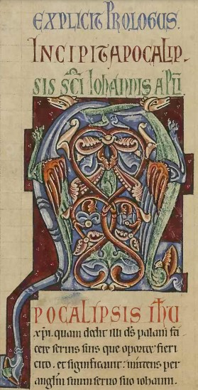
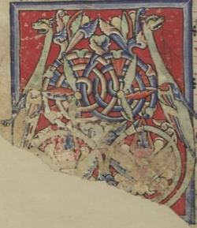
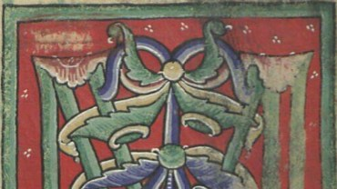
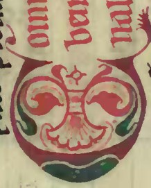
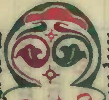
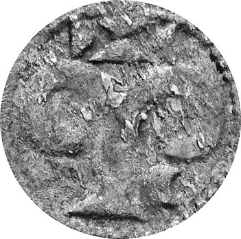

Na primeira imagem (Biblioteca Britânica, Royal MS 13 D VI, fólio 61v, segundo quartel do séc. XII) pode-se ver uma inicial historiada que retrata um episódio do êxodo, em que Deus pôs à prova os fiéis, após o que lhes enviou a serpente para que pudessem olhar para ela e salvar-se. A inicial foi estudada no blog da Biblioteca Britânica, pelo que a interpretação da mesma tem sustento na doutrina.
A serpente é muitas vezes substituída por um dragão ou por um pássaro mitológico, facto que ocorre também em representações do êxodo na coluna, que proliferam em códices medievais e cujos exemplos já publicámos.
Na segunda e na terceira representação (Alc. 163, fólio 69, 1176-1225 e Alc. ex. 115, fólio 75v, 1201-1235) podem-se ver as duas serpes, ou os dois pássaros mitológicos, encimando àrvores da vida. Repare-se na figuração do coração, que por vezes se apresenta invertido na raíz; as quatro flores; as espirais; a vesica piscis; e o semeado de três pontos em triângulo no campo das representações, motivo omnipresente na iluminura medieval e que terá que ter significado trinitário.
Na quarta representação (Alc. ex. 115, fólio 42v, 1201-1235), que apresentamos apenas parcialmente, visto que no futuro ainda a vamos abordar noutro âmbito, há um pormenor delicioso que que ajuda a interpretar a estilização de outras representações. É que, muito embora a representação pareça encimada por duas volutas vegetalistas, aparentemente decorativas, percebemos que o campo é semeado dos tais arranjos triangulares de três pontos, ao passo que junto a cada voluta se apresenta um pequeno traço (ou crescente) branco, que não tem paralelo na representação. Esse traço branco é claramente a língua da serpe, facto que confere carga semiológica evidente às duas volutas vegetalistas, equiparando-as aos exemplos que mostrámos anteriormente.
Mas, se assim for, a quinta, sexta e sétima representações que apresentamos (Alc. ex. 408, séc. XII) deverão também estilizar as serpes nas volutas que as encimam. É interessante perceber, nessas representações, a figuração de astros crucíferos e a manutenção do padrão das duas volutas, que figuram a árvore da vida. Aliás, se compararmos a sétima representação à oitava, dificilmente deixamos de encontrar coincidências.
Na época da fundação da nacionalidade há capitulares evidentemente historiadas e há outras que requerem bagagem lexical por parte do intérprete para se lhes entender a história. Não há é muitas capitulares meramente fúteis e sem carga semiológica.